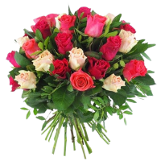
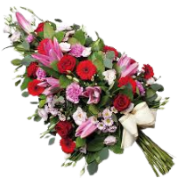
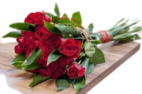
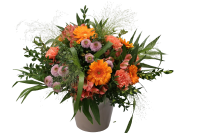
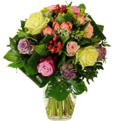
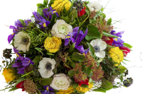

BloomPetals
Chez BloomPetals, nous croyons que chaque célébration mérite d'être parée de la beauté naturelle des fleurs. Nous sommes une entreprise passionnée et créative spécialisée dans la confection de magnifiques bouquets floraux pour embellir vos événements spéciaux. Que ce soit un mariage, un anniversaire, une réception ou toute autre occasion festive, nos artisans floraux talentueux travaillent avec dévouement pour créer des arrangements uniques et époustouflants qui émerveilleront vos invités.
- 
- 
- 
Nos services
CRÉATION DE BOUQUETS PERSONNALISÉS:
BloomPetals offre un service de création de
bouquets floraux entièrement personnalisés pour toutes les occasions. Que ce soit pour un
mariage élégant, un anniversaire chaleureux ou un événement d'entreprise sophistiqué,
notre équipe d'artisans floraux talentueux travaille en étroite collaboration avec les clients.
pour concevoir des arrangements sur mesure, adaptés à leurs goûts et à l'ambiance de
l'événement.
DÉCORATION FLORALE D'ÉVÉNEMENTS:
Notre équipe de professionnels se spécialise dans
la décoration florale d'événements. Nous transformons les lieux de fêtes en espaces
enchanteurs en utilisant des fleurs fraîches et luxuriantes. Des centres de table élégants aux
arches florales majestueuses, nous concevons des décors floraux qui éblouissent et
captivent les invités. Notre service comprend également la livraison, l'installation et la
décoration sur place pour garantir une expérience sans stress pour nos clients.
ATELIERS DE COMPOSITION FLORALE:
En plus de nos services de décoration et de création
de bouquets, BloomPetals propose des ateliers de composition florale interactifs. Ces
ateliers sont parfaits pour les amateurs de fleurs et les passionnés de design floral. Nos
experts partagent leurs connaissances et leurs compétences, guidant les participants dans
la création de leurs propres arrangements floraux. C'est une expérience enrichissante et
ludique, idéale pour les événements d'entreprise, les enterrements de vie de jeune fille ou
les fêtes privées. Les participants repartent avec leurs créations florales uniques et des
souvenirs mémorables de l'atelier.
- 
- 
- 